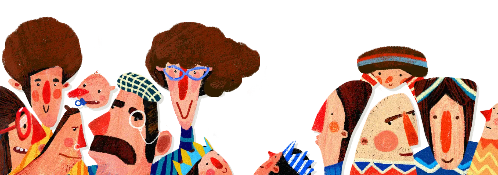

Kaha mind

We care about how you’re doing. If you dont feel good, we dont feel good.
So we built a space that feels warm, approachable, and actually supportive, whether you’re having the worst week of your life or you just need someone to talk to.
Think of us as a quiet, steady starting point where you can just pause and figure things out without any pressure. Whether that looks like specialized professional care, self-guided tools, or simply a safe space to get your thoughts out of your head, we’re here to make sure you never have to navigate it alone.
We’ll help you find the kind of support that fits you best. So we built a space that feels warm, approachable, and actually supportive,